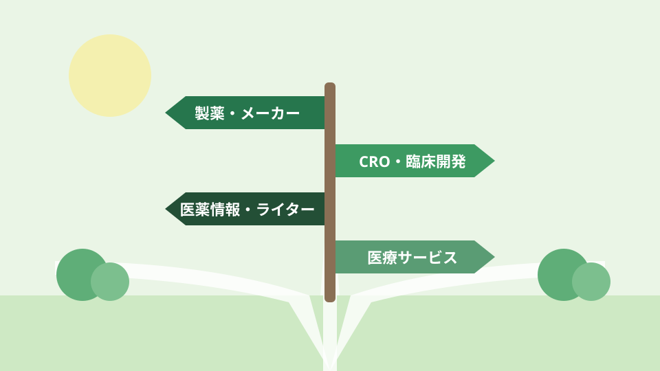

01時間や場所の希望に合う、
時間や場所の希望に合う、
自分らしい働き方へ。
- 通勤・在宅勤務・出社頻度を具体的に考える
- フレックスなどの制度と、実際の運用を確認する
- 生活リズムに合う仕事の進め方を探す
病院・薬局・ドラッグストアで
これからの働き方を考えている薬剤師さんへ
＼ 企業転職、何から始める？ ／
ひとりで悩まず
プロに相談から。
求人選びも書類も、一緒に整理。
薬剤師専門の転職エージェント（ファルマスタッフ）の公式サイトへ移動します
転職するか迷っている段階でも相談できます。
［PR］本ページはプロモーションを含みます
ひとつでも心に浮かんだら、
今とは違う選択肢を知ることから始めてみませんか。
薬局や病院で経験を重ねてきたからこそ、
企業で働く自分の姿は、すぐには想像しにくいもの。
でも、医薬品が生まれ、必要な人に届くまでには、
現場以外にもさまざまな仕事があります。
大切なのは、企業名を知るだけでなく、
「どんな職種で、どんな力が求められるのか」を知ること。
薬剤師としての経験がそのまま活きる仕事も、
新しい知識を身につける必要がある仕事もあります。
「自分には無理かもしれない」と決める前に、
経験と求人の接点を、ひとつずつ探していきましょう。
これまでの経験は、
これからの可能性につながっています。
仕事内容・待遇・勤務制度は、企業や職種によって異なります。
「薬剤師だからできること」を、
企業に伝わる言葉にする。
現場では当たり前の経験でも、企業の採用担当者には、そのままでは価値が伝わらないことがあります。
この整理をひとりでやろうとすると、
時間がかかって途中で止まりがち。
薬剤師の転職に詳しい担当者と話すと、
自分では気づけなかった強みが見えてきます。
だから、最初の一歩は「相談」がおすすめです。
薬剤師として積み重ねた経験を
次の仕事につなげるために
ファルマスタッフ公式サイトへ移動します。サポート内容・紹介できる求人は、地域や希望条件などにより異なります。
求人を探す前に、大切にしたい未来を考える。

思い描く毎日を、そのまま担当者に伝えてみる。
それだけで、探す求人の方向が見えてきます。
経験の活かし方を、具体的に考える
以下は経験を整理するための例です。転職成功事例ではありません。
相手の理解度に合わせて説明した経験、資料を工夫した経験、質問に対応するために情報を調べた経験。何を考え、どのように行動したかを振り返ります。
調べる職種の例：学術・医薬情報・メディカルライティング
手順の見直しやミス防止の取り組みを、「課題・行動・結果」の順に整理。チームを巻き込んだ工夫や、改善前後の変化を具体化します。
調べる職種の例：品質関連・業務支援・医療サービス企画
医師や看護師との連携、後輩の育成、店舗間の調整など。立場の違う相手と、共通の目的に向けて取り組んだ場面を書き出します。
調べる職種の例：臨床開発・営業・プロジェクト支援
応募資格・必要な実務経験は、個別の求人で確認してください。
「自分の経験だと、どの職種が合う？」
担当者に聞いてみるのが近道です。
相談前に知っておきたい
全体の流れを知っておくと、相談もスムーズ。
ひとりで抱え込まず、プロの力を借りながら進めましょう。
年収・勤務地・勤務時間・仕事内容について、「必須」「できれば」「柔軟に考えられる」の３つに分けます。
同じ職種名でも、会社によって仕事内容・応募条件・勤務制度は違います。求人票だけでは分からない部分も多いステップです。
担当した業務だけでなく、工夫したことと結果を振り返ります。数字で示せる実績は、背景や自分の役割も添えます。
求人票が求める力と、自分の経験を結びつけます。「なぜ企業か」「なぜこの職種か」を、自分の言葉で説明できるようにします。
給与だけでなく、業務内容・勤務地・勤務時間・転勤の有無などを確認します。STEP 01で決めた希望に立ち返り、判断しましょう。
最初の一歩は、
希望をそのまま担当者に話してみること。
はい。転職時期が未定であることを伝えたうえで、今の状況や希望を整理する目的で相談できます。紹介された求人に必ず応募する必要はありません。
求職者側の利用料はかかりません。サービス範囲の詳細は公式サイトでご確認ください。
求人によって異なります。未経験者を対象とする募集も含め、応募条件・求められる経験を担当者と一緒に確認しましょう。
必要な英語力は職種や企業によって異なります。資格だけで判断せず、求人票や担当者への確認で、実際の業務で求められる水準を把握しましょう。
希望勤務地の求人や、在宅勤務に対応する募集があるかを担当者に確認してみましょう。在宅勤務でも出社頻度や居住地の条件がある場合があります。
保証されるものではありません。仕事内容、経験、企業の制度などによって変わるため、応募先ごとに確認することが大切です。